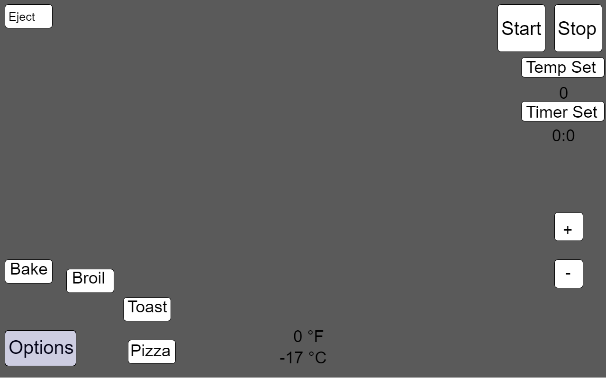
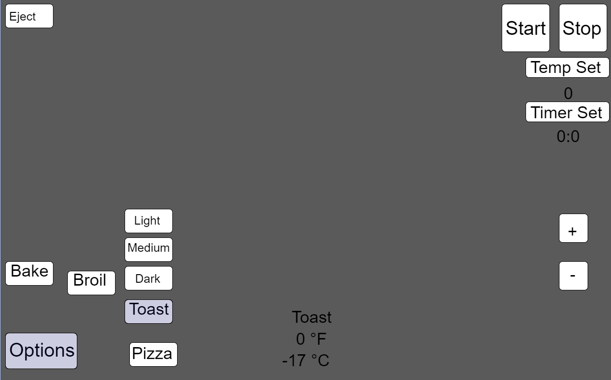
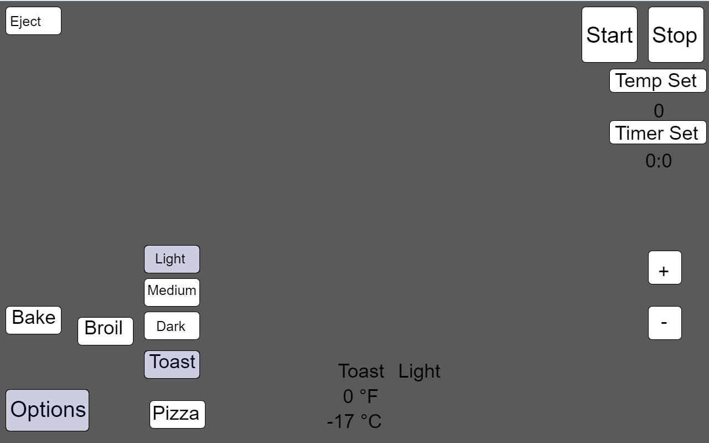
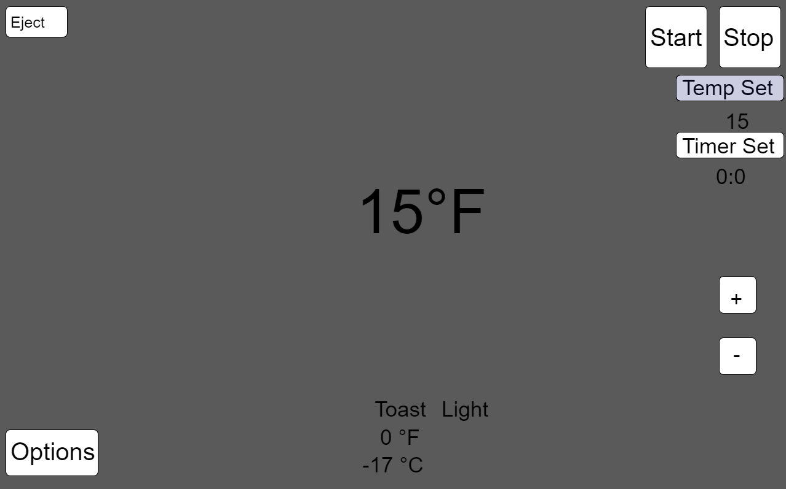
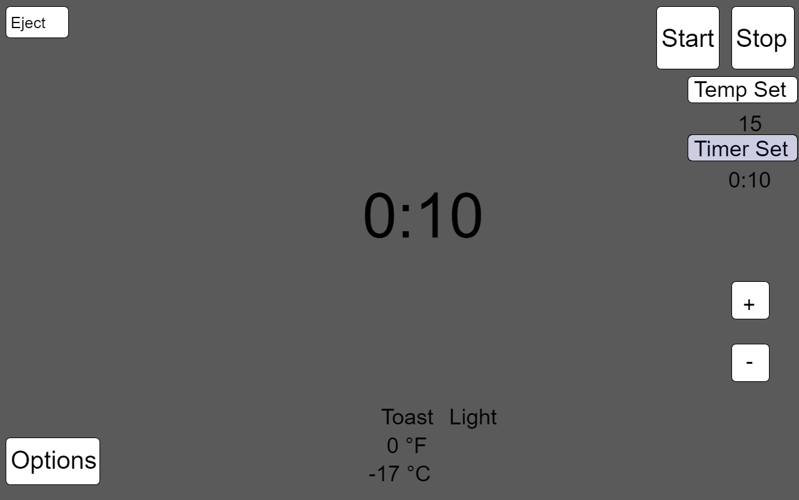
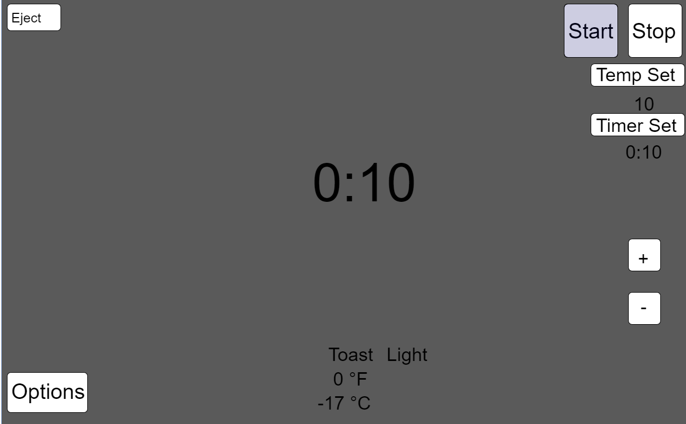
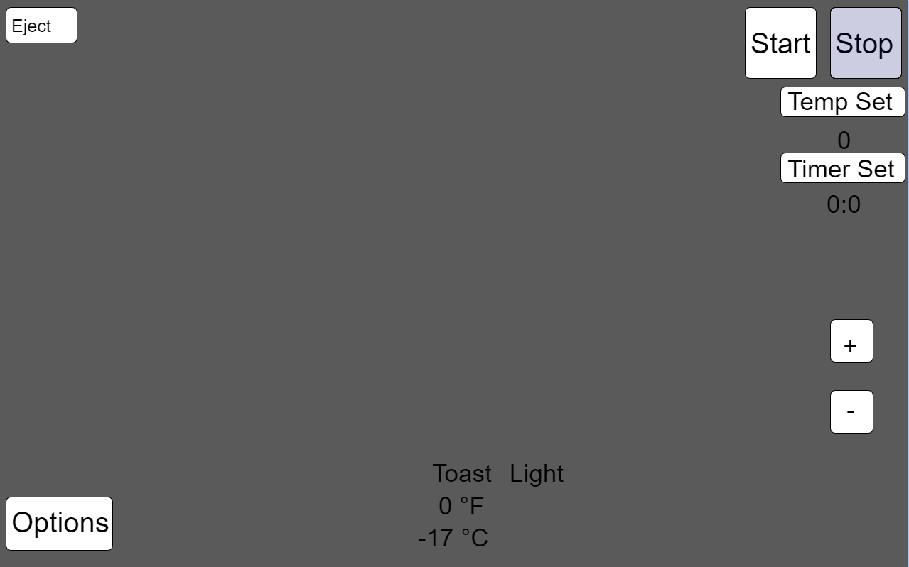
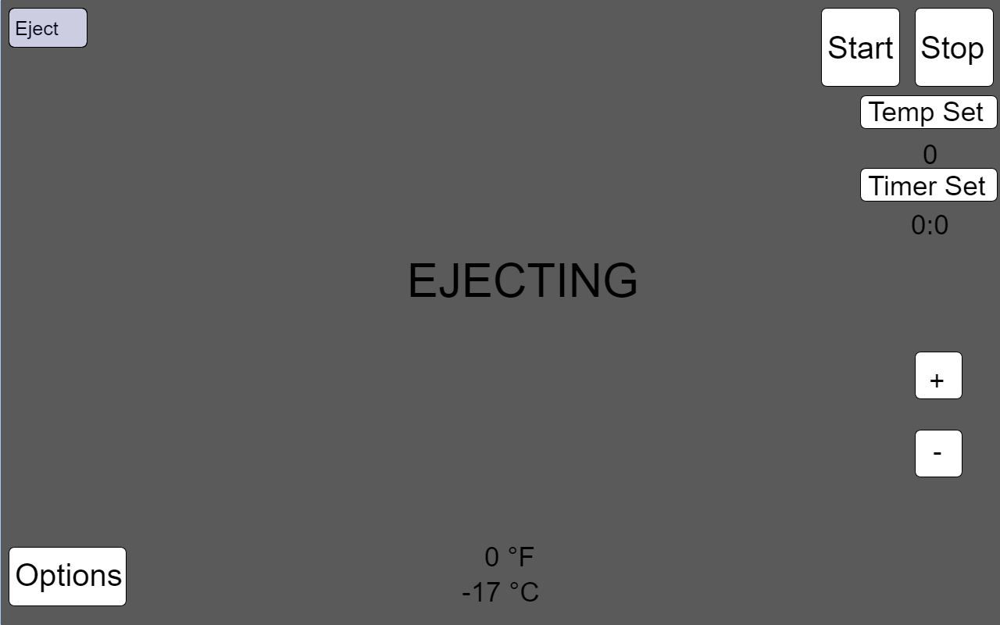

The usage of this toast I believe is quite intuitive without not many commands that have to be done in order to turn it on and use it. So in this first picture you can see all the buttons displayed. They are centered around the corners in order to not block up too much of the screen.
The first step you would normally take is choosing the mode that you want to use the toaster in. The app gives you the options of Bake, Broil, Toast, and Pizza with possibly more being added later on, although I have not gotten to that yet.
You would then select what mode you want, and it tells you that it is selected by changing to a light blue color in the background of the button. In this picture I have chosen the option to toast. And you can see that once toast was selected, it gives you options of different shades of toast that you may want to have your toast at. This ranges from light to dark shades.
As you are selecting these modes if you look to the bomttom middle of the toaster, it will tell you what modes you have picked. So now it lights up as Toast Light right above the temperatures which indicate the temperature inside the oven which are in Farenheit and Celsius
The second thing you want to change would be the temperature that you would like to cook your food at. You would press temp set and use the plus and minus signs to change the temperature by 5 degrees at a time. I chose not to increment it by 1 degrees at a time because most people don't use exact measurements for their toaster ovens or when baking in general. As you adjust the temperature it will display
Then we move onto the timer set which also goes by 5 minute intervals versus 1 minute at a time. I find that when I use a toaster oven, I tend to just crank it "stay on" meaning just on while I watch my food or check up on it once in a while. As you adjust the timer using the plus and minus buttons it will display on the middle of the screen as with the temperature but also under "Timer set".
After doing so, you can now press "Start" which will turn the oven on. There is also a sound that plays when you press start to let you know that the oven has now been turned. The timer will graudally count down. There is no seconds displayed only minutes and hours
There is also a stop button that will allow you to stop the toaster at any time. When pressed, temperature and timer will both reset back to 0. So it is not a pause button, but a reset button more so.
Once the toaster is stopped, you have the option of pressing eject or pulling on the handle to open the door. On the upper left hand side of the toaster's display has the button for eject. If eject is pressted the screen will have a large ejecting display letting the user know that the toaster is not ejecting the item. The idea is that the eject button will also lower down the door instead of just ejecting the item.
1. The first feature would be the sound of the start button. This is helpful because its a second aid to notify the user that the toaster is on aside from just visually seeing it.
2. The second feature is the ejecting button. This allows the user to have a no hands experience and lets the toaster itself eject the item at its own pace. Sometimes giving the users control something like pulling out the tray can damage the machine and make its lifespan shorten.
3. The third feature is stoppers for the hinges. There are stoppers that slow down the door hinges on shelves so that no matter how hard you slam it, the hinge will stop first a certain point then slowly close. After seeing it at my sister's house I thought it was something useful to add to an appliance such as a toaster. So if you are quickly closing the door, it would slam. Or if your hands are full and you need to just push the door in it will keep the toaster from getting slammed by the door